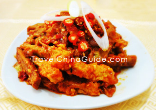

Ćwiczenie 2
Bakłażany o rybnym aromacie
Bakłażany o rybnym aromacie (chiń.: 魚香茄子; pinyin: yúxiāng qiézi) – klasyczna potrawa kuchni syczuańskiej. Jest jedną z wegetariańskich odmian yuxiang – mieszanki warzyw lub mięs przyrządzanych w specyficznych przyprawach (głównie czosnek, imbir i chili).
Danie składa się z pokrojonych na kawałki bakłażanów, najpierw smażonych w woku na głębokim oleju do konsystencji maślanej, a następnie gotowanych w sosie na bazie wywaru oraz pasty z chili i bobu (lub fasoli). Całość doprawia się imbirem, czosnkiem, dymkami i octem ryżowym, w wyniku czego uzyskuje się bardzo specyficzny aromat, zbliżony do rybnego. Danie nie zawiera natomiast żadnych składników rybnych. W restauracjach zachodnich, zamiast pasty z chili i bobu, stosuje się bardzo często sos sojowy, co spłyca odczucia smakowe i zubaża potrawę.
Również, w imię dostosowania się do gustów zachodnich, danie często uzyskuje nazwę ‘’bakłażany w sosie czosnkowym’’, tak aby nie zniechęcać konsumentów.
Wzór na pyszne bakłażany:
x25 > x12 < 174,2

Kod programu tworzącego bakłażana:
#include <stdio.h>
Output:
int main(void)
{
printf("AAAOEOEOEO!!! BAKŁAŻANNNNOOOOOODOODODODOD!!!!");
return 0;
}
NAJPYSZNIEJSZY BAKŁAŻAN!